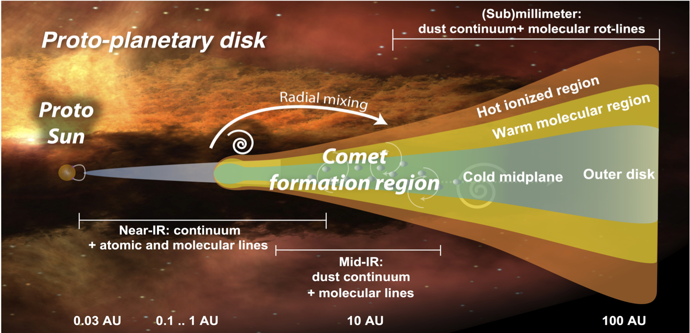

Research interests: stellar evolution, binary systems
Class 0/I Protoplanetary Disks

In the summer of 2025, I worked under the supervision of Dr. Francesco Zagaria and Dr. Alice Somigliana at MPIA for 6 weeks as a summer research intern. I worked on classifying class 0/I protoplanetary disks, including cleaning and imaging ALMA data as well as modelling the emission spectra of the disks using the Galario code. The aim was to compare the properties of class 0/I disks with those of older (Class II) disks.
Ultracompact White Dwarf Binaries
 This research was part of the ASPIRE research program I joined in June 2023.
I worked under the supervision of with
Jan Van Roestel, PhD from the University of Amsterdam.
The research entailed searching for a very unique type of binary stars
called ultracompact binaries: binaries that orbit so close together, that some of them
can fit inside the diameter of the sun!
This research was part of the ASPIRE research program I joined in June 2023.
I worked under the supervision of with
Jan Van Roestel, PhD from the University of Amsterdam.
The research entailed searching for a very unique type of binary stars
called ultracompact binaries: binaries that orbit so close together, that some of them
can fit inside the diameter of the sun!
These binaries are accreting which means that one star (the accreting) takes
in material from the other star (the donor). In our case,
the accreting star is a white dwarf and the donor star resembles a white dwarf
but colder and smaller. To search for these stars, we used data from the
Zwicky Transit Facility (ZTF): an optical/NIR camera scanning the northern sky once
every 2 nights.
We searched through more than 4k sources from ZTF showing dwarf novae,
which is a characteristic feature of ultracompact binaries. We eventually
found 4 new eclipsing accreting ultracompact binaries. These systems are usually so faint,
so finding 4 of them was such a pleasant surprise!
Three of the four systems fall under a sub category of accreting ultracompact binaries called
AM Canum Venaticorum (AM CVn)– binaries in which the donor star is strictly helium-filled
with no hydrogen traces.
Wanna dig deeper into the details? Read the letter producing by this work
here. (Open Source)
Wide binaries and multiple nuclei central stars
 In 2022, I worked with Prof.
Alaa Ali from Cairo University to search for and classify wide binary and
multiple system central stars inside planetary nebulae (CSPNe). We used the DR3 to find
new candidates as well as confirm previously published ones by González et al (2021).
Our search criteria was adopted from conditions on parallax and proper motion values put
forward by El-Badry et al. (2018).
We eventually found a number of new CSPNe that have a binary, ternary and even a quadruple nature grouped into
four categories of varying percentages of certainty.
In 2022, I worked with Prof.
Alaa Ali from Cairo University to search for and classify wide binary and
multiple system central stars inside planetary nebulae (CSPNe). We used the DR3 to find
new candidates as well as confirm previously published ones by González et al (2021).
Our search criteria was adopted from conditions on parallax and proper motion values put
forward by El-Badry et al. (2018).
We eventually found a number of new CSPNe that have a binary, ternary and even a quadruple nature grouped into
four categories of varying percentages of certainty.
After we hunted down CSPNe,
we calculated the masses of central stars and their companion(s) in a number of systems.
The companion masses were obtained using the Virtual Observatory SED Analyzer
(VOSA),
we fitted the SED curve to the BTSettl (CIFIST) model and then used the PARSEC 1.2 evolutionary
isochrones to calculate the mass as well as the effective temperature and luminosity of the
companion stars.
Want to take a deeper dive into this research? Check out the whole paper:
arxiv.